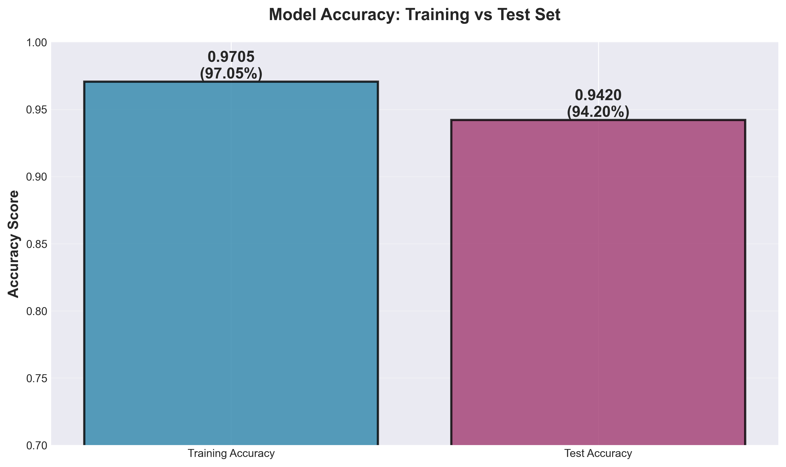
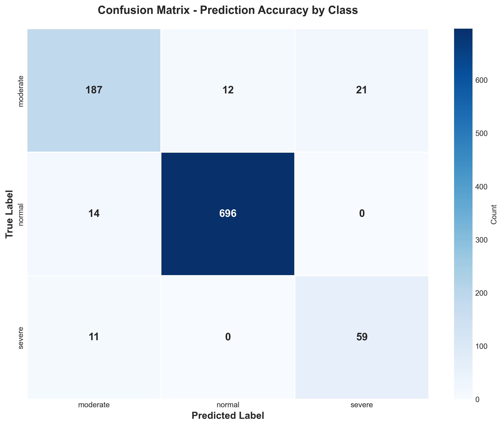
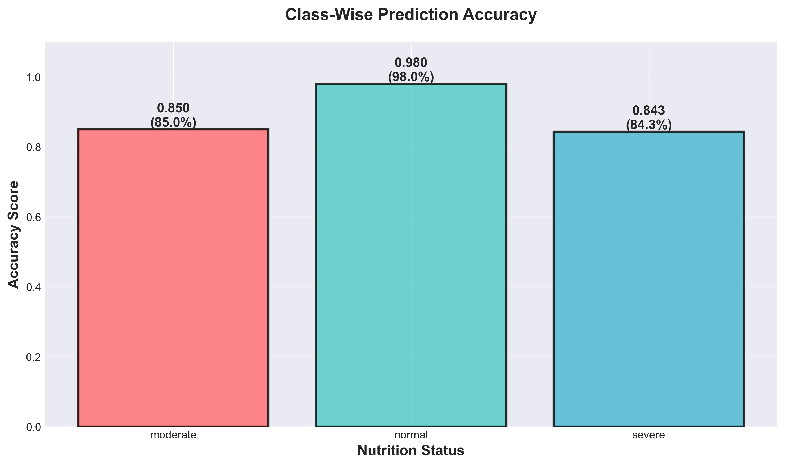
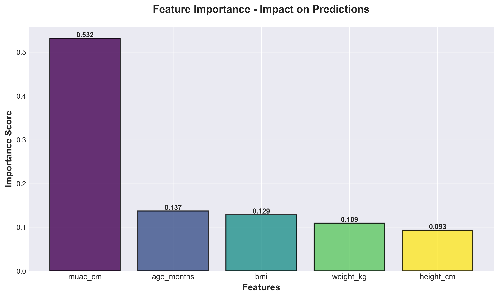
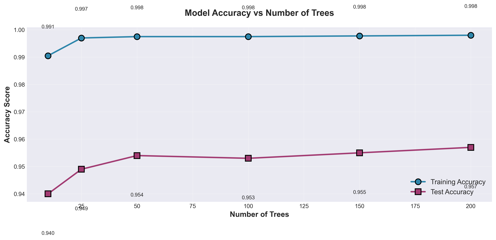
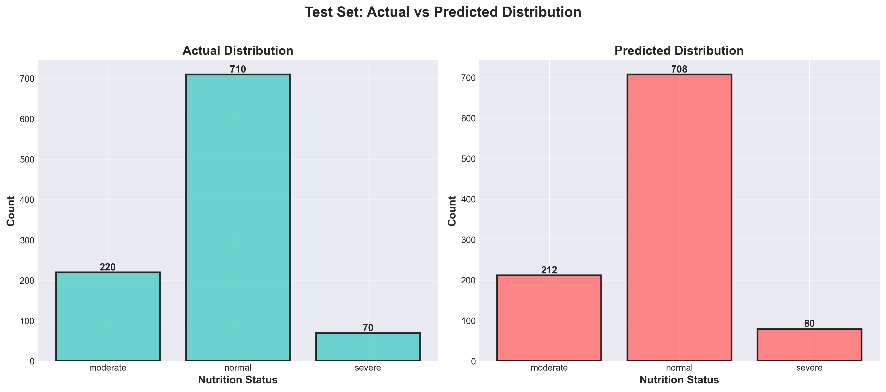

1. Training vs Test Accuracy

Direct comparison showing excellent generalization with minimal overfitting.
The small gap (2.85%) between training and test accuracy indicates a well-balanced model.
2. Confusion Matrix

Shows the model's prediction accuracy for each nutrition status class.
Strong diagonal values indicate high accuracy across all classes.
3. Class-Wise Accuracy

Breakdown of prediction accuracy for each nutrition status: Normal (98.03%),
Moderate (85.00%), and Severe (84.29%) malnutrition cases.
4. Feature Importance

Identifies which features (age, weight, height, MUAC, BMI) contribute most
to accurate predictions. Helps understand the model's decision-making process.
5. Accuracy vs Number of Trees

Demonstrates how model complexity (number of trees) affects accuracy.
Shows optimal performance achieved with 200 trees.
6. Prediction Distribution

Compares actual vs predicted distribution of nutrition statuses.
Close alignment indicates balanced and accurate predictions.